Практична робота. Мешканці
Малюємо будинки
- Встановити такі налаштування за допомогою команди Файл - Параметри проекту 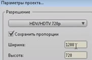
- Намалювати такий фон на слої Будинки: будинок та дорогу на задній план перемістити командою Малювання - В самий низ (або виділити і стрілками вгору вниз переміщати), тримати Shift коли переміщаємо копії вікон, виділити групу вікон для копіювання та масштабування.
- 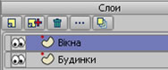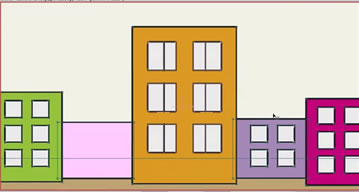
- 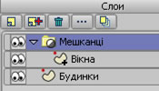Для центрального будинку вікна створити на окремому векторному шарі Вікна. Для вікон малюємо перемички. Щоб перемички з' єднати з вікном обираємо інструмент Створити форму, виділяємо ласо вікно і жмемо кнопку Створити форму.
- Додати картинки небо та дерево
- Переглянути малюнок Файл - Рендер кадру.
- Створити груповий шар, який назвати Мешканці. Під цей шар перетягнути векторний куля з вікнами будинку.
- Відкрити параметри групового шару Мешканці (клацнути двічі по шару) та встановити на вкладці Маска - Приховувати усе.
- Відкрити параметри шару Вікна (двіч клацнути по шару) та встановити на вкладці Маска прапорець для команди Виключити контур.
- 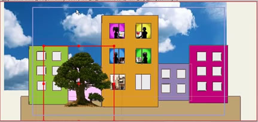Заселяємо мешканців: виділити векторний шар Вікна та вставити готові зображення - Файл - Імпорт - Зображення. Вставити малюнки з теки Урок 2 з робочого столу. Зменшити розмір рисунків під розмір вікна.
Анімація неба
- Перейти у 240 кадр та утримуючи Shift перемістити небо управо.
- Переглянути анімацію.
Робота з камерою
- Перейти на 24 кадр та вибрати інструмент Зумировать камеру - збільшити масштаб лівою кнопкою миші та інструментом Перемащать камеру перетягнути до першого вікна.
- Перейти на 72 кадр і перемістити камеру на інше вікно. У такий спосіб показати усі вікна.
- Вкінці завершити загальним планом нашої анімації.
Практична робота. Малювання персонажу
- Намалювати персонаж Skeleton, який складається з 6 шарів. На окремих шарах намалювати частини Skeletonа. Зверніть увагу на точки персонажу. 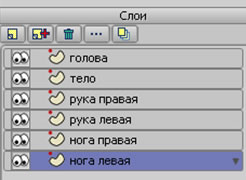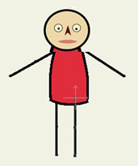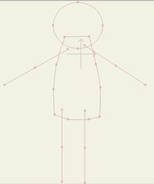
- Створити кістяний шар, який назвати Skeleton.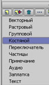
- На кістяному шарі перетягнути усі створені шари нашого персонажа. 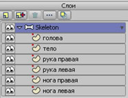
- Прокладаємо кістки. Для зручності розміщення кісток переключимось у режим Каркас кнопкою Якість відображення.
- Прокладаємо першими кістки спину кнопкою 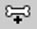 від нижньої кістки вгору - три кістки. Прокладаємо далі кістку для голови.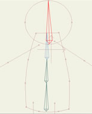
- Перед прокладанням кісток для рук потрібно виділити інструментом 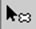 головну кістку від якої будуть відходити кістки рук. 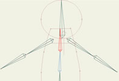
- Для прокладання кісток ніг спочатку виділити головну кістку, потім прокласти кістки ніг. 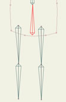
- Змінити зони впливу кісток кнопкою 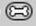
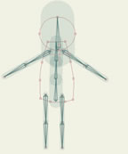